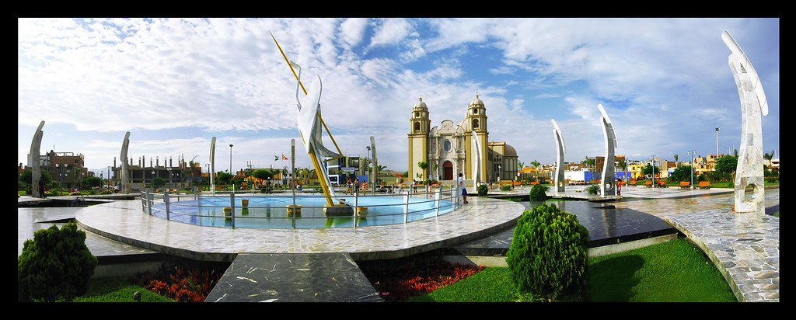

El Distrito de Nuevo Chimbote cuenta en la actualidad con más de 200.000 habitantes, el crecimiento que ha experimentado se debe a numerosos factores, pero sin duda, uno de ellos es el crecimiento económico, que hacen de ella una ciudad con un futuro aún más prometedor.
Según indican algunos hallazgos arqueológicos encontrados, la riqueza marina existente así como las características de las Bahías: El Ferrol y Samanco, motivó el asentamiento de comunidades nativas, entre otros de origen Mochica; poniendo en evidencia que la pesca, era una actividad económica importante en el territorio actual de Chimbote y Nuevo Chimbote, seguida por el intercambio o trueque de productos marinos con los que la agricultura de territorios aledaños del interior. Reseña Histórica
La historia del distrito, está asociada a su proceso de origen y crecimiento urbano, y este proceso está condicionado a la ubicación geográfica de la ciudad de Nuevo Chimbote, al sismo de 1970 y al desarrollo de la ciudad de Chimbote; y la evolución de esta última está determinada por las tendencias del crecimiento de su industria Pesquera y Siderúrgica.
En 1958 se fecha como el año en que se asientan los primeros pobladores en la zona que hoy ocupa la urbanización Buenos Aires, capital del distrito de Nuevo Chimbote; esta presencia e instalación de asentamientos humanos está asociada al crecimiento de la ciudad de Chimbote debido al "boom" pesquero que vivió este puerto.
En 1960, en la margen izquierda del río Lacramarca se producen invasiones y en estos terrenos eriazos donde se instalan los asentamientos humanos de Villa María, Villa María Baja, 1° de Mayo y 3 de Octubre. Luego de estas invasiones, y de acuerdo a los planos y proyectos aprobados por el Ministerio de Fomento y Obras Públicas, la empresa Urbanizadora Chimbote S.A. construye la urbanización Buenos Aires, ubicada a 12 Km. Del casco urbano de Chimbote. Parte del proyecto urbanístico incluía obras del sector rústico de los Álamos con terrenos de una hectárea; de una zona industrial de 2.5 hectáreas y una zona de vivienda semirústica de una hectárea; en esta década también se construye la urbanización Mariscal Luzuriaga (ex bancarios).
En los 70, luego del gran sismo de mayo que destruyó la ciudad de Chimbote y colapsó su infraestructura básica: agua, desagüe, red eléctrica y red vial, la comisión CRYRZA elabora el "Plan Director de la Municipalidad del Santa" aprobado en 1974, estudio en el que se plantea como área de expansión urbana la zona sur de la ciudad de Chimbote, que en 1945 tenía una población de 4000 habitantes había pasado en 1970 a tener una población de 170000, habiendo alcanzado 5 años antes el nivel de población proyectado en el Plan Regulador de 1962; si bien es cierto que como consecuencia de estos planes de expansión se construyen urbanizaciones como Bruce, Las Casuarinas, Los Héroes(ex Canalones), José Carlos Mariátegui(Ex Unicreto), Bellamar y asentamientos Humanos como PPAO su ocupación se postergó por la renuencia de la población de Chimbote a trasladarse a la zona sur, debido a su aparente lejanía respecto a los centros de trabajo y zonas de comercio. En 1980, las urbanizaciones de la zona sur comienzan a ser ocupadas y se construyen otras nuevas como: El Pacífico, Los Cipreses, Santa Rosa, Santa Cristina, Banchero Rossi, El Bosque, San Rafael, Las Gardenias que en conjunto conforman lo que es hoy el distrito de Nuevo Chimbote. En todo este tiempo la zona sur formaba parte de la ciudad de Chimbote, y las estadísticas poblacionales no discriminan la evolución demográfica de la zona actual de Nuevo Chimbote.
En 1990, la zona sur adquiere su consolidación urbana y organizativa determinando que una Junta Vecinal conformada por vecinos notables, presidida por el Sr. Arturo Díaz Cedrón gestionaran la creación del distrito de Nuevo Chimbote, con su capital la ciudad de Buenos Aires, la que se crea el 1° de Junio de 1994 mediante Ley N° 26318.
Como en los tiempos pasados, en el distrito de Nuevo Chimbote también se produce un gran crecimiento demográfico puesto que según el Censo de Población y Vivienda de 1993(Según INEI), contaba ya con 66962 habitantes, pero este crecimiento era más ordenado. En esta década aparecen alrededor de 40 asentamientos humanos en forma de HUP (Habilitaciones Urbanas Progresistas), UPIS (Urbanizaciones Populares de Interés Social) y AA.HH. (Asentamientos Humanos).
Para el año 2000 el distrito de Nuevo Chimbote cuenta con una población estimada de 82526 habitantes, aplicando una tasa de crecimiento anual de 1.5% . Este estimado dista mucho de ser realidad por cuanto, en los últimos diez años está ocurriendo un trasvase de gran parte de la población de Chimbote hacia Nuevo Chimbote, ante las perspectivas que los lotes de terreno van a ser atendidos con infraestructura básica, asfaltado de vías, menor contaminación ambiental, terrenos firmes y no inundables, contrario a la situación de Chimbote. Lecciones Aprendidas
Desde la aparición de los primeros asentamientos humanos en la ciudad de Buenos Aires y en territorio del distrito Nuevo Chimbote, su espacio ha jugado el papel de zona natural de expansión urbana de Chimbote, desbordada por la afluencia de inmigrantes en busca de trabajo ante el "boom" pesquero y siderúrgico.
Luego del gran sismo de 1970 que destruye la ciudad de Chimbote y colapsan sus redes de servicios básicos, se plantea que la zona sur donde hoy se encuentra Buenos Aires sea el lugar donde deberá edificarse la ciudad de Chimbote, proponiéndose inclusive el traslado de la población para lo cual se dota de un Centro Cívico para instalar a la administración local, se emprende proyectos urbanísticos, avizorándose como el lugar residencial ideal para la gran masa que labora en las industrias pesqueras y siderúrgicas.
Buenos Aires y las demás urbanizaciones que se instalan, nacen así como una comunidad en extensión de Chimbote, en consecuencia dependiente totalmente de la economía de esa localidad, sin una actividad productiva y económica propia. Carente de riqueza que genere fuentes de trabajo local excepto una incipiente actividad comercial, aunque con proyecciones para albergar a futuro el Parque Industrial "San Antonio" y zonas para la instalación de Industrias Ligeras, pero no habilitadas.
Hoy en día cuando la pesca y la siderurgia ya no son en Chimbote el emporio de antes, en Nuevo Chimbote se siente cada vez con más intensidad los embates de la pobreza, lo que nos lleva a pensar que urgentemente debemos impulsar, crear y mirar otras fuentes de riqueza y de trabajo como la agroindustria, la acuicultura, el turismo que solvente la economía local del distrito.
Himno de Nuevo Chimbote
CORO
Con los pechos henchidos de orgullo
Exclamemos con fuerza y vigor
¡Somos hijos de Nuevo Chimbote,
Tierra estoica de arena y sol! ESTROFA I
Ya vencimos la sed, las tinieblas,
La tristeza y la desolación
Hoy crecemos de cara al mañana,
Somos fuente de superación
Ciudad nueva, terruño sagrado
El orgullo del viejo Chavín. ESTROFA II
Cual torrente tu pueblo progresa
Con trabajo, esfuerzo y tesón
El dorado, Atahualpa, Anconcillo
Buenos Aires, muy hermosos son;
Con tus hombres de brazos de acero,
Forjaremos la superación. ESTROFA III
Los pantanos de Villa
María Son reservas de la humanidad,
Sus mujeres son fuente de vida
Tan hermosas como el mismo mar
Y Sus niños creando el futuro
Ya avizoran el nuevo Perú.